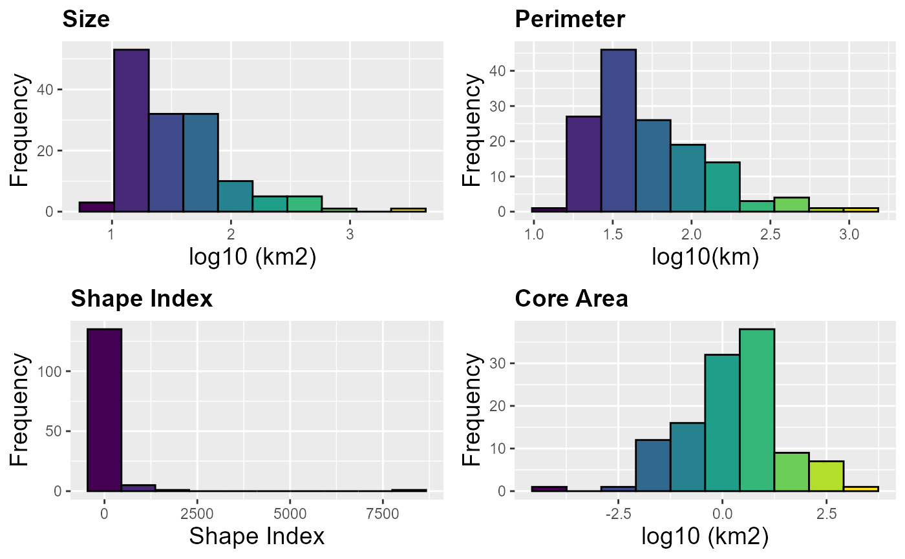
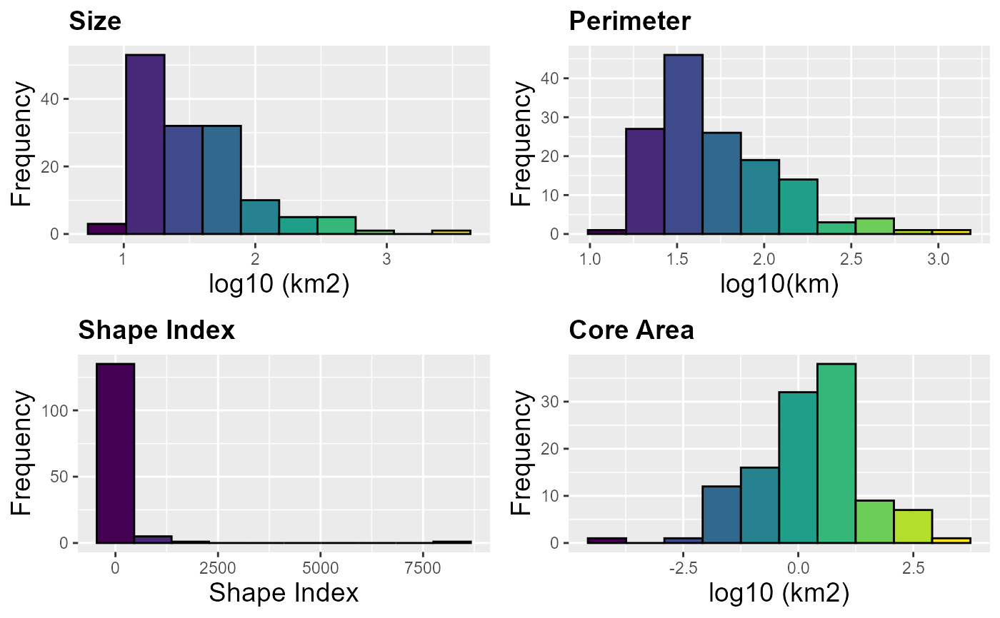

Calculate patches/nodes and landscape statistics
MK_Fragmentation(
nodes = NULL,
edge_distance = 500,
min_node_area = 100,
landscape_area = NULL,
area_unit = "ha",
perimeter_unit = "km",
plot = FALSE,
write = NULL
)Arguments
- nodes
Object of class
sf, sfc, sfg, SpatialPolygons. Individual nodes, the object must be in a projected coordinate system.- edge_distance
numeric. Distance to edge in meters. Default equal 500 m (Haddad et al. 2015)- min_node_area
numeric. Minimum node area used to calculate the number of nodes with an area smaller than the one provided. Default equal 100 km2 (Haddad et al. 2015)- landscape_area
numeric. Total area of the study landscape in km2 (optional). If NULL the total nod area will be used.- area_unit
character. You can set an area unit (e.g., "km2", "cm2", "m2", "ha"; see unit_convert). Default equal to square kilometers "km2".- perimeter_unit
character. You can set a perimeter unit (e.g., "km", "cm", "m", "ha"; see unit_convert). Default equal to kilometers "km".- plot
logical. Basic histograms and core area - edge map.- write
character. Write the table (landscape statistics), sf object (patch/node statistics) and plots. It's necessary to specify the path and prefix, for example, to save in the path "C:/Folder" with the prefix "Fragmentation":"C:/Folder/Fragmentation".
Value
Patch/node and landscape statistics:
1) Patches Area in square kilometers.
2) Number patches.
3) Mean size of patches.
4) Number of patches smaller than the parameter min_node_area (default = 100 km2).
5) Percentage of patches smaller than the parameter min_node_area (default = 100 km2).
6) Total patch edge. Total perimeter of the patches (unit = perimeter_unit).
7) Edge density. Total perimeter per unit of area (unit = area_unit), default = km2. A value of 0 is present when there is no edge in the landscape.
8) Patch density.
9) Total core area (units = area_unit) considering the distance set in the parameter edge_distance (delfault = 500 m).
10) Cority index. It is a measure of fragmentation with respect to a distance from the core area (parameter edge_distance; delfault = 500 m), where a value of 1 indicates a landscape without fragmentation. Average for landscape level.
11) Shape Index. A simple shape metric that takes values from 1 (perfectly compact) to infinity is derived by dividing the perimeter by the perimeter of a circle of the same area. Average for landscape level.
12) Fractal dimension. The index reflects the complexity of the shape of the fragment. A fractal dimension greater than 1 indicates an increase in the complexity of the shape. When the value is close to 1 the shape is simple, such as squares.Average for landscape level.
13) Effective Mesh Size. Effective Mesh Size (MESH) is a measure of the degree of fragmentation in the landscape ranging from 0 to the total landscape area. MESH is maximum when the landscape unit consists of a single habitat fragment or the habitat is continuous beyond the landscape unit analyzed (Moser, 2007).
14) Core percent (patch level). Percentage of core area in the patch (units = area_unit) considering the distance set in the parameter edge_distance (delfault = 500 m).
15) Edge percent (patch level). Percentage of edge in the patch (units = area_unit) considering the distance set in the parameter edge_distance (delfault = 500 m).
16) PARA (patch level). Ratio of the patch perimeter to area.
*NOTE.* In the results we use the term patches instead of nodes due to the common use of this term in fragmentation statistics in science.
References
Haddad et al. (2015). Science Advances 1(2):e1500052. https://www.science.org/doi/10.1126/sciadv.1500052.
McGarigal, K., S. A. Cushman, M. C. Neel, and E. Ene. 2002. FRAGSTATS: Spatial Pattern Analysis Program for Categorical Maps. Computer software program produced by the authors at the University of Massachusetts, Amherst. Available at the following web site:
www.umass.edu/landeco/research/fragstats/fragstats.html.
Moser, B., Jaeger, J.A.G., Tappeiner, U. et al. Modification of the effective mesh size for measuring landscape fragmentation to solve the boundary problem. Landscape Ecol 22, 447–459 (2007). https://doi.org/10.1007/s10980-006-9023-0
Examples
data("habitat_nodes", package = "Makurhini")
nrow(habitat_nodes) # Number of nodes
#> [1] 404
fragmentation <- MK_Fragmentation(nodes = habitat_nodes, edge_distance = 1000, plot = TRUE)
 
#Table
fragmentation$`Summary landscape metrics (Viewer Panel)`
#Shapefile
fragmentation$`Patch statistics shapefile`
#> Simple feature collection with 404 features and 9 fields
#> Geometry type: POLYGON
#> Dimension: XY
#> Bounding box: xmin: -108954 ymin: 2025032 xmax: 202330.2 ymax: 2198936
#> Projected CRS: NAD_1927_Albers
#> First 10 features:
#> Id Area CA CAPercent Perimeter EdgePercent PARA ShapeIndex
#> 1 1 85.8368 0.000 0.0000 5.989 100.0000 14.3324 0.1824
#> 2 2 220.2168 0.000 0.0000 11.346 100.0000 19.4092 0.2157
#> 3 3 11019.9668 2442.307 22.1626 184.969 77.8374 59.5774 0.4971
#> 4 4 121.0018 0.000 0.0000 6.974 100.0000 17.3504 0.1788
#> 5 5 184.7226 0.000 0.0000 14.452 100.0000 12.7818 0.3000
#> 6 6 26.3052 0.000 0.0000 4.685 100.0000 5.6148 0.2577
#> 7 7 43.4931 0.000 0.0000 6.066 100.0000 7.1700 0.2595
#> 8 8 57.5414 0.000 0.0000 8.119 100.0000 7.0873 0.3019
#> 9 9 203.4670 0.000 0.0000 14.309 100.0000 14.2195 0.2830
#> 10 10 29440.4346 3852.713 13.0865 444.203 86.9135 66.2770 0.7303
#> FRAC geometry
#> 1 0.8040 POLYGON ((54911.05 2035815,...
#> 2 0.9005 POLYGON ((44591.28 2042209,...
#> 3 1.1217 POLYGON ((46491.11 2042467,...
#> 4 0.8100 POLYGON ((54944.49 2048163,...
#> 5 1.0235 POLYGON ((80094.28 2064140,...
#> 6 0.9446 POLYGON ((69205.24 2066394,...
#> 7 0.9557 POLYGON ((68554.2 2066632, ...
#> 8 1.0335 POLYGON ((69995.53 2066880,...
#> 9 1.0012 POLYGON ((79368.68 2067324,...
#> 10 1.1849 POLYGON ((23378.32 2067554,...

#Table
fragmentation$`Summary landscape metrics (Viewer Panel)`
#Shapefile
fragmentation$`Patch statistics shapefile`
#> Simple feature collection with 404 features and 9 fields
#> Geometry type: POLYGON
#> Dimension: XY
#> Bounding box: xmin: -108954 ymin: 2025032 xmax: 202330.2 ymax: 2198936
#> Projected CRS: NAD_1927_Albers
#> First 10 features:
#> Id Area CA CAPercent Perimeter EdgePercent PARA ShapeIndex
#> 1 1 85.8368 0.000 0.0000 5.989 100.0000 14.3324 0.1824
#> 2 2 220.2168 0.000 0.0000 11.346 100.0000 19.4092 0.2157
#> 3 3 11019.9668 2442.307 22.1626 184.969 77.8374 59.5774 0.4971
#> 4 4 121.0018 0.000 0.0000 6.974 100.0000 17.3504 0.1788
#> 5 5 184.7226 0.000 0.0000 14.452 100.0000 12.7818 0.3000
#> 6 6 26.3052 0.000 0.0000 4.685 100.0000 5.6148 0.2577
#> 7 7 43.4931 0.000 0.0000 6.066 100.0000 7.1700 0.2595
#> 8 8 57.5414 0.000 0.0000 8.119 100.0000 7.0873 0.3019
#> 9 9 203.4670 0.000 0.0000 14.309 100.0000 14.2195 0.2830
#> 10 10 29440.4346 3852.713 13.0865 444.203 86.9135 66.2770 0.7303
#> FRAC geometry
#> 1 0.8040 POLYGON ((54911.05 2035815,...
#> 2 0.9005 POLYGON ((44591.28 2042209,...
#> 3 1.1217 POLYGON ((46491.11 2042467,...
#> 4 0.8100 POLYGON ((54944.49 2048163,...
#> 5 1.0235 POLYGON ((80094.28 2064140,...
#> 6 0.9446 POLYGON ((69205.24 2066394,...
#> 7 0.9557 POLYGON ((68554.2 2066632, ...
#> 8 1.0335 POLYGON ((69995.53 2066880,...
#> 9 1.0012 POLYGON ((79368.68 2067324,...
#> 10 1.1849 POLYGON ((23378.32 2067554,...